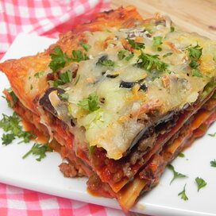

Pizza Lasagna

Description
This is a traditional lasagna but with ingredients found on your favorite pizza.
Ingredients
1 (8 ounce) package lasagna noodles
6 Cajun-style sausage links, casings removed
2 (24 ounce) jars marinara sauce
1 (7 ounce) package sliced pepperoni
1 (8 ounce) package sliced fresh mushrooms
1 onion, sliced
1 large green bell pepper, chopped
2 (2.25 ounce) cans sliced black olives
2 (8 ounce) packages shredded pizza cheese blend
Steps
Preheat oven to 350 degrees F (175 degrees C).
Bring a large pot to boil. Cook lasagna noodles in the boiling water. Drain.
Heat on medium-high heat. Cook sausage in the hot skillet.
Brush a layer of sauce over the bottom of pan. Arrange lasagna noodles side by side over the sauce.
Bake in the preheated oven until heated, about 35 minutes.
Return to top
Return to home page